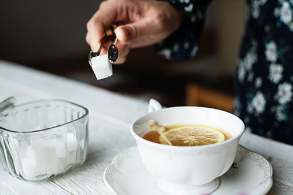
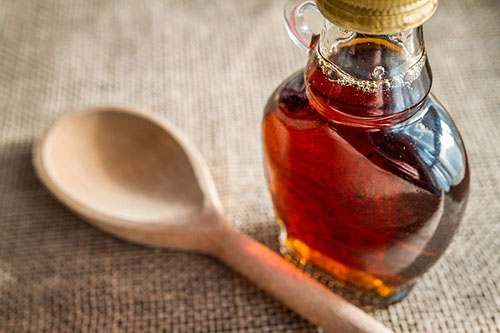
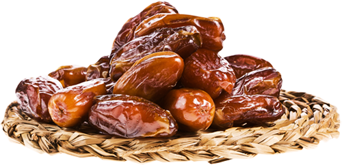
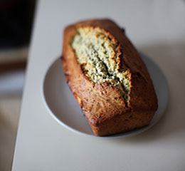
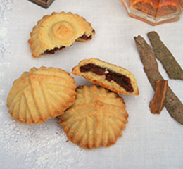
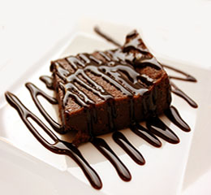
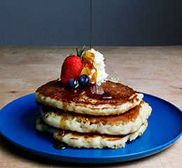

Why you should avoid Sugar ?
 The harmful effects of sugar go way beyond empty calories.
Added sugar is so unhealthy that it is probably the single worst ingredient in the modern diet.
Here are the top 5 reasons to avoid sugar.
1. Added Sugar Supplies a Large Amount of Fructose:
The reason added sugar (and its evil twin... High Fructose Corn Syrup) is bad for you, is that it supplies a very large amount of fructose.
Sugar (and HFCS) are half glucose, half fructose. Glucose is essential and can be metabolized by pretty much every cell in the body. If we don't get it from the diet, our bodies make it from proteins and fat.
Fructose, however, is not essential to our functioning in any way.
The only organ that can metabolize fructose is the liver, because only the liver has a transporter for it.
When large amounts of fructose enter the liver and it is already full of glycogen, most of the fructose gets turned into fat.
This process is probably one of the leading causes of the epidemics of many chronic, Western diseases.
I'd like to point out that this does NOT apply to fruit, which are a real food with vitamins, minerals, fiber, lots of water and are very difficult to overeat on.

2. Sugar Doesn't Contain Any Vitamins or Minerals (Empty Calories):
Sugar IS empty calories. No doubt about that.
Most high-sugar foods like pastries, sodas and candy bars contain very little essential nutrients.
People who eat them instead of other more nutritious foods will probably become deficient in many important nutrients.
3. Sugar Causes Deposition of Fat in the Liver:
When we eat fructose, it goes to the liver. If liver glycogen is low, such as after a run, the fructose will be used to replenish it.
However, most people aren't consuming fructose after a long workout and their livers are already full of glycogen.
When this happens, the liver turns the fructose into fat.
Some of the fat gets shipped out, but part of it remains in the liver. The fat can build up over time and ultimately lead to Non-Alcoholic Fatty Liver Disease.
4. Sugar Harms Your Cholesterol and Triglycerides:
Most of the fat generated in the liver gets shipped out as Very Low Density Lipoprotein (VLDL) particles.
These particles are rich in triglycerides and cholesterol.
In a controlled study, people were assigned to drink 25% of calories as either a glucose-sweetened drink or a fructose-sweetened drink for 10 weeks.
The fructose group had:
- Increases in blood triglycerides
- Increases in small, dense LDL and oxidized LDL (very, very bad)
- Higher fasting glucose and insulin
- Decreased insulin sensitivity
- Increased fat in the abdominal cavity (visceral fat)
5. Sugar Is Addictive:
When we eat sugar, dopamine is released in the brain, giving us a feeling of pleasure.
This is actually how drugs of abuse like cocaine function.
Our brain is hardwired to seek out activities that release dopamine. Activities that release an enormous amount of it are especially desirable.
In certain individuals with a certain predisposition to addiction, this causes reward-seeking behavior typical of addiction to abusive drugs.
Studies in rats demonstrate that they can in fact become physically addicted to sugar.
This is harder to prove in humans, but many people consume sugar and other junk foods in a pattern that is typical for addictive, abusive compounds.
Healthy Sugar Substitutes
To add sweetness to your Meals you don't have to use white sugar, try some of these healthier sugar substitutions instead:
 
-
Agave Nectar:
History lesson time: The Aztecs used agave thousands of years ago and praised this syrup
as a gift from gods. A derivative of the same plant as tequila (cheers!), this golden
sweetener tastes similar to honey and is perfect in hot or iced tea. But be sure to use
in moderation—agave's high fructose content can sometimes cross it in to the dangerfood zone! -
Maple Syrup:
The benefits of maple syrup are aplenty: It comes directly from a plant’s sap and contains
over 50 antioxidants. Make sure to grab the real stuff (sorry, Aunt Jemima) and spread it
over waffles or use it in homemade granola. Honey:
Thanks to bees, this scrumptious stuff packs an antioxidant punch. Enjoy some in hot tea
to help soothe a scratchy throat, or get creative and add a spoonful to homemade salad
dressing.Applesauce:
Instead of a half-cup white sugar in a batch of oatmeal cookies, swap in an equal amount
of applesauce! The natural sweetness from a Golden Delicious or Fuji apple is perfect in
an after-dinner treat. Purchase the no sugar-added kind, or make some at home.Raisins:
For a creative spin on things, blend a cup of raisins in a food processer.
With antioxidants and fiber, these little dried grapes add a kick to any baked good.Cinnamon:
Spice up a morning cup of coffee with cinnamon. This super spice adds subtle sweetness
while boosting immunity, no calories included.Unsweetened Cocoa Powder:
For a warm winter treat, mix some unsweetened cocoa powder in a glass of hot water
or skim milk. It’ll satisfy that sweet tooth without all the extra sugar the sweetened
version includes. Add a splash of vanilla extract for extra flavor!
Reb A:
Hailing from South America, this natural extract comes from the stevia plant
and is recognized by the FDA as safe. It only takes a drop or two to sweeten
a bowl of oatmeal.Cranberries:
Skip the cup of sugar and add cranberries to a batch of muffins or scones.
These little tart treats add a dose of antioxidants refined sugar can’t offer.Processed Dates:
Grab a bunch of dates for an extra boost of antioxidants in the next baking experiment.
With a low glycemic index and some subtle sweetness, it may be perfect for brownie batter or the base of homemade granola bars.
Substitute two-thirds cup for one cup of regular sugar.
Try some of these delicious recepies with no sugar added :
|  |  |  |  |
| Honey banana bread | Date Cookies(Maamoul) | Chocolate Fudge Brownies | Maple Oatmeal Pancakes |
| via (Cookie and Kate) | via (Tasty Mediterraneo) | via (This Gal Cooks) | via (Modern Honey) |